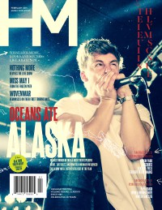

HM, Feb 2015, #187
| Cover |
|---|
|  |
 Online Exclusively Online Exclusively |
| Writers in this Issue |
| Francis, Matt Greiner, Nielson Huncherick, Sean Long, Brooke Mora, Gerard Rodriguez, Marissa Santos, Sarah Dos Stagg, David |
Oceans Ate Alaska
HM Live Music Issue:- Oceans Ate Alaska by David Stagg
- "Revivers" by Sarah Dos Santos
- "Microphone Fiends" by Gerard Mora
- "Band of Brothers" by David Stagg
- "The New Breed" by David StaggWovenwar; Jordan Mancino interviewed
- "Songwriter"
- "Riff Slayers" by David Stagg
- "Heralders"
- "Southern Heavyweights" by David Stagg
- "Collaborators"
- "Troublemaker"Taylor Young (Nails, Disgrace)
- "Imported Goods" by Sarah Dos Santos
- "Notes from NAMM" by Marissa Rodrigueznotes from the 2015 NAMM trade show
- "Becoming Vekora" by Sean HuncherickVekora, Jesse Sprinkle interviewed
- "Keeping US Winters Hot" by Brooke Long
- Korn in #129
- "Whoops, apologies and touring with 400 Facebook Likes" by Matt FrancisMatt reminisces about the joys of touring.
- "Awareness: Maintaining peace in humiliation" by Nielson Greiner
Relevant Links
For more information about HM visit .This issue is available exclusively online.
You may be able to find HM in a library near you: Worldcat

© 2011 CMnexus. Last updated September 2019. Contact: editor -AT- cmnexus -DØT- org About